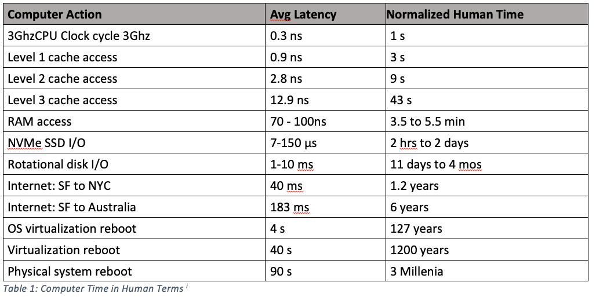

What is Big Data?¶
Big Data is probably the only term that can compete with “data science” for frequency of use despite the fact no one means the same thing when they say it. In many contexts, for example, “big data” just refers to large datasets.
In this course, however, we’ll use a much more precise definition: data is “big” if it doesn’t fit into RAM (which we’ll refer to here as main memory for reasons that will become clear later. ).
Why does it matter if data fits into main memory?¶
Before we get into big data and strategies for working with it, we need to take a short digression into computer architecture.
When you computer executes code – for example, adding up all the entries in a vector – it doesn’t all happen in one place. Your computer stores data (like your vector) in main memory (again, this is the term used for what you buy as RAM) where it has several gigabytes of space to put things. But actual mathematical operations happen in the processor, which is physically located in a different place in your computer. So to add two numbers, you computer must move those numbers from main memory into a tiny set of memory banks inside your processor from which they can be accessed, added, and the result stored. (Most modern processor cores have 16 innermost memory slots called “registers”, each of which can only store only 64 bits of data – i.e. a single number.)
This is important because in data science, moving data back and forth from memory takes much longer than doing actual calcuations. Indeed, in a normal data scienc workflow, moving data back and forth from memory is a huge portion of what takes up the time your computer spends “working”, not doing actual calculations.
This makes memory management important in general, but the problem becomes much acute when you can’t store your data in main memory. That’s because while you can store data on your harddrive, and move data directly from your harddrive to your processor and back, that process is unimaginably slow.
How much slower? Data can move from main memory to the processor at a rate ~1,000 times faster than from a spinning harddrive, over 100 times faster than from SATA SSDs, and over 25 times faster than from m2 SSDs. (speeds estimted from transfer speed estimates here).
But even those transfer speeds are only half the story – hard drives also have higher latency, meaning that with harddrives, there’s a much longer lag between when you ask for data when the data transfer begins than with main memory. How much slower? This table re-scales actual latency times (the time between when you ask for a byte of data and when it arrives at the processor) to human time scales (don’t worry about the cache entries yet) (from this excellent post).

As the table shows, if we were to pretend that a single tick of your processor (essentially how long it takes to add two numbers) took 1 second, then stopping to get one byte of data from main memory would take several minutes. And if we wanted to get data from a spinning harddrive, we’d have to wait between 11 days and four months. SSDs obviously perform much better than physical harddrives with spinning platters, but even those take hours to days. And that’s just to get the first byte! There are also the differences in transfer rates once data starts flowing!
In other words, when working with large datasets, moving around your data is often the most expensive thing you will do, and the penalities for not being able to fit your data into main memory mean that something that might take minutes if you could do it with data in main memory could take days.
OK, what’s this cache stuff?¶
Because of how expensive it is to move data back and forth from main memory, you computer has a set of intermediate memory banks between main memory and your processor called caches. Caches try to predict what data you might use in the future, and keep it close to the processor so it can be accessed faster. Caches can substantially improve performance, but as a programmer you don’t actually get to control what gets put into cache – your cache is managed by the operating system. There are some tricks for trying to use data in ways that are more likely to result in your computer being able to use data stored in cache (in general, your computer fills the cache with (a) data you’ve used recently, and (b) data that is stored near the data you’ve used recently, so doing everything you can with the same object at once can help a little), but honestly they’re just not something you should worry about. I just wanted to demystify “cache” for when you come across it.
OK… So how do I deal with Big Data?¶
Check out Big Data Strategies here!.